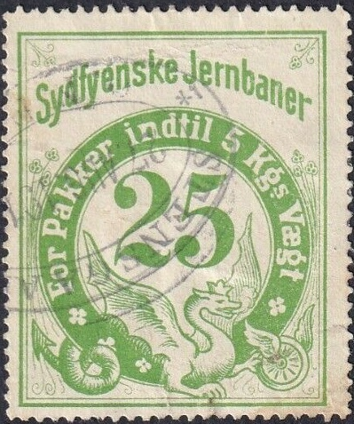

1924 design
Return To Catalogue - Denmark - Denmark Railway Stamps, overview
Note: on my website many of the
pictures can not be seen! They are of course present in the
catalogue;
contact me if you want to purchase it.
In 1877 a 20 o brown stamp was issued. The line was taken over by the DSB in 1879.
1924 design
In this 1924 design I have seen (specialist
disinguish between some different fonts of the value)
30 o brown, 40 o red, 75 o blue, 80 o yellow, 90 o grey, 100 o
violet, 150 o red (1961), 175 o brown (1963), 225 o yellow
(1965), 300 o green (1965),
Furthermore should exist: 20 o green, 25 o red, 25 o orange, 45 o
yellow, 50 o green, 60 o blue, 125 o brown, 200 o orange,
Overprints:
"110" on 200 o orange, "110" on 225 o yellow,
"120" on 30 o brown (1950), "120" on 80 o
yellow, "120" on 90 o grey (1950), "125" on
40 o red (1959, two types), "200" on 40 o red (1959),
"200" on 80 o yellow (1959), "200" on 90 o
grey, "330" on 300 o green.
Furthermore should exist:
"40" on 25 o red, "60" (red) on 75 o blue,
"70" on 90 o grey (1959), "200" on 100 o
violet (1961), "225" on 175 o brown (1965)
"70" on "120" on 90 o grey (1950)
In 1959 a pictorial design was issued with the image of a train with a winged wheel on top: 70 o and 125 o.
The earliest railway stamps I know of (The Stamp Collector's Magazine Vol IV, 1866, page 89) are issued in 1866 with inscription "DE SJAELLANDSKE JERNBANER" in the values 8 sk blue (5 Pund) and 16 (12?) sk brown (10 Pund). See also http://a34.dk/banem/regional/dsj/dsj.html (site no longer active). In 1875 a 20 ore blue (10 Pund) was issued in the same design.


1866 10 Pund 12 Skilling brown value in an ellipse, crown on top.
Also a 5 Pund 8 Skilling blue.

1875 20 ore blue (10 Pund)
The Skagensbanen were established in 1890.


Similar design as the Danske Statsbaner stamp. Two different
types: bottom curl of "2" pointing sideways or upwards
and dot behind "VAEGT" in different location.


As the previous set but slgithly different lettering (see for
example the second "S" of SKAGENS").

1933(?) Design with winged wheel. The Horsens Torring Jernbane
used the same design of stamps.

1960's(?) Same design, but smaller size. Many values exist, also
with "Gebyr" inscription.
I have seen in this smaller design:
60 o red, 100 o red, 100 o orange and black, 175 o violet and
red, 225 o brown and black, 340 o green and black, 500 o green
and black, 600 o blue and black, 800 o orange and black, 800 o
red and black, 900 o brown and black, 10 Kr green and black, 12
Kr red and black,
With overprint:
"50" and bar on 10 o violet, "75" (at least
two types) and two bars on 60 o red, "220" and bar on
100 o red, "440" (at least two types) on 300 o blue and
blac
"Gebyr 100" (red) on yellow
With "Rutebilpk." overprint:
50 o violet, 75 o orange,
"5 øre" on 40 o green, "10 øre" on 60 o
red, "30" (red) and red bar on 20 o blue

Later isseu (1958?)
The first stamps were issued in 1924.
In 1946 some pictorial stamps were issued with inscription "SVJ": "50" on 5 o (Skive), "110" on 75 o (Knud Strand), 120 o (Spøttrup).

A train design with only inscription "SVJ" was issued in 1959 in the values 90 o, 100 o, 175 o, 200 o, 225 o and 300 o (all in color red). Similar stamps were issued for "MFVJ" (Mariager Faarup Viborg Jernbane).


1918(?) leaves in the four corners.
In the above design I have seen
40 o green, 50 o green, 60 o blue, 90 o yellow,
Overprinted:
"25 Øre" on 90 o yellow, "35 Øre" (violet)
on 25 o blue, "35 Øre" (violet) on 25 o red, "35
Øre" (black) on 25 o red, "40 Øre" (violet) on
50 o green,
"90 Øre" on "100 Øre" on 90 o yellow

Similar design, but with lines in the four corners, different
steam train.
In this modified steam train design I have seen
35 o green (imperforate), 50 o blue, 60 o yellow, 90 o red
Overprinted:
"35" on 40 o green, "50" on 60 o blue,
"60" on 25 o red, "60" on 50 o blue.


As before, but with a modern train. Also smaller sized stamps
In the above design I have seen:
Large sized stamps: 50 o black on green; "70" on 60 o
blue
Small sized stamps: 50 o black on green, 125 o black on yellow.


Small sized stamps; I have seen 30 o violet, 40 o red (2 types
"4" different), 50 o green, "40" on 100 o
yellow, "50" on 100 o yellow.
Only one stamp was issued in 1897: 20 o blue.

The Sydfyenske Jernbaneselskab (South Funen Railway Company) opened its railway in 1876. In 1949 this railway was nationalized.


1876 With "S.F.J." inscription only; 05 o red, 50 o
blue and 1 Kr. yellow. A 4.05 o red and 4.50 o blue should also
exist.


1906 issue: With "S.F.J." inscription only; 5 o blue,
10 o red, 30 o green, 40 o brown, 50 o yellow, 60 o violet. In
1920 the values 7 o orange, 80 o olive and 100 o grey were added.
In 1935 this set was reissued with minor changes.

1885 issue: Sydfyenske Jernbane, dragon design 20 o green. I've
seen this stamp with a 1897 cancel.

1903: Very similar design, but with "Sydfyenske Jernbaner og
Svendborg - Nyborg Banen Supplementsfrimaerke": 5 o red.

Sydfyenske Jernbaner (with final 'r'); modified dragon design,
large size
In this design I have seen: With weight inscription around the stamp 15 o violet (2 1/2 Kgs); two types straight or curly bottom of "2" in "2 1/2" 25 o green (5 Kgs) 35 o blue (2 1/2 Kgs) Withoug weight inscription 25 o red 45 o violet 90 o brown

Sydfyenske Jernbaner (with final 'r'); modified dragon design,
smaller size 50 o green
In the above (smaller) design I have seen: 20 o red, 25 o red, 25 o green, 30 o violet, 40 o blue, 50 o blue, 50 o green, 60 o grey, 75 o orange, 90 o brown; "30" on 20 o red.
{kind=link}